Portrait, Beauty und Corporate
Effiziente Grundlagen für Headshots, Editorials, Beauty und Businessportraits.
Beispiele: weiches 45°-Portrait, Clamshell-Beauty, Clean Corporate.
Presets
Presets dienen als schnelle Ausgangsbasis. Sie helfen, Lichtidee, Dekor und Pre-Production schneller zu strukturieren.
Galerie
Jedes Preset öffnet sich direkt in der App: verschieben, anpassen, dann exportieren oder speichern.
Vielseitige Headshots, Actor-Books und editoriale Porträts.
 Porträt Weich 45°Kamera Stativ Standard, Softbox Octa 120, Reflektor 110 cm und Flag 60 x 90
Porträt Weich 45°Kamera Stativ Standard, Softbox Octa 120, Reflektor 110 cm und Flag 60 x 90 Headshot Corporate CleanKamera Stativ Standard, Softbox Recta 90 x 120, Panel-Reflektor 120 x 180 und V-Flat 100 x 200 +1
Headshot Corporate CleanKamera Stativ Standard, Softbox Recta 90 x 120, Panel-Reflektor 120 x 180 und V-Flat 100 x 200 +1 Schauspieler Low KeyKamera Stativ Standard, Softbox Octa 90, Negative Fill 120 x 200 und Fresnel 200 W +1
Schauspieler Low KeyKamera Stativ Standard, Softbox Octa 90, Negative Fill 120 x 200 und Fresnel 200 W +1 Daylight V-FlatKamera Stativ Standard, Diffusionsrahmen 200 x 200, COB LED 600 W und V-Flat 120 x 240 +1
Daylight V-FlatKamera Stativ Standard, Diffusionsrahmen 200 x 200, COB LED 600 W und V-Flat 120 x 240 +1Saubere Setups für Haut, Makeup und Studio-Glamour.
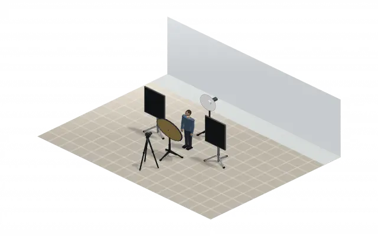
Beauty ClamshellKamera Stativ Standard, Beauty Dish 70 cm, Reflektor 110 cm und Flag 90 x 120 Beauty Ring CleanKamera Stativ Standard, Ringlicht 45 cm, Flag 60 x 90 und Panel-Reflektor 120 x 180
Beauty Ring CleanKamera Stativ Standard, Ringlicht 45 cm, Flag 60 x 90 und Panel-Reflektor 120 x 180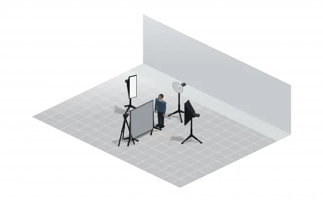
Beauty Gloss StripsKamera Stativ Standard, Beauty Dish 55 cm, Striplight 30 x 120 und Panel-Reflektor 120 x 180 Make-up EditorialHocker Hoch, Kamera Stativ Standard, LED-Panel 1 x 2 und Spiegel Stehend +1
Make-up EditorialHocker Hoch, Kamera Stativ Standard, LED-Panel 1 x 2 und Spiegel Stehend +1Businessporträts, Executives und Markenkommunikation.
Silhouetten, Ganzkörper und kontrastreicheres Editorial-Licht.
 Mode ParabolischKamera Hohes Stativ, Softbox Parabolique 150, Striplight 40 x 140 und Negative Fill 120 x 200
Mode ParabolischKamera Hohes Stativ, Softbox Parabolique 150, Striplight 40 x 140 und Negative Fill 120 x 200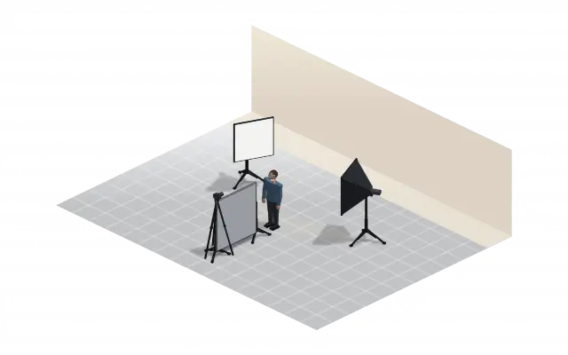
Katalog CleanKamera Hohes Stativ, Softbox Recta 90 x 120 und Panel-Reflektor 120 x 180 Mode Silhouette StripsKamera Hohes Stativ, Striplight 40 x 140 und Panel-Reflektor 120 x 180
Mode Silhouette StripsKamera Hohes Stativ, Striplight 40 x 140 und Panel-Reflektor 120 x 180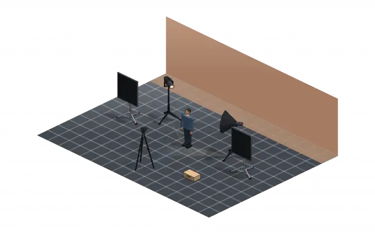
Editorial ProjektorKamera Hohes Stativ, Optischer Projektor 19°, Softbox Octa 90 und Flag 90 x 120 +1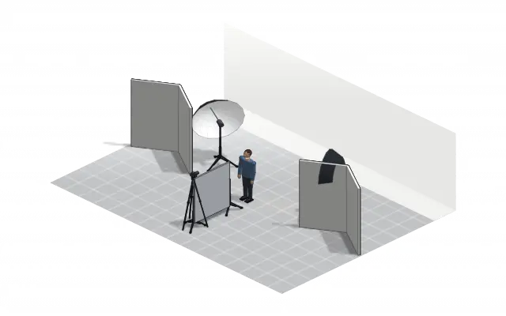
High-Key SchirmeKamera Hohes Stativ, Tiefschirm 135 cm, Panel-Reflektor 120 x 180 und V-Flat 120 x 240Packshots, Tabletop und kontrollierte Werbe-Sets.
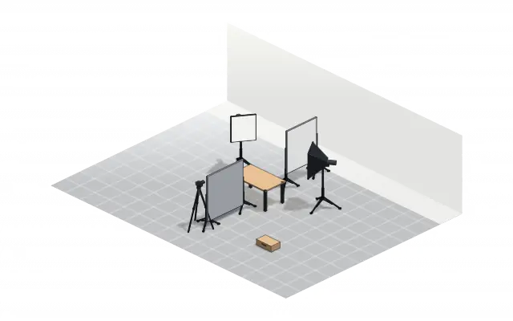
Packshot TabletopTisch 120 x 70, Kamera Stativ Standard, Softbox Recta 60 x 90 und Diffusionsrahmen 100 x 150 +2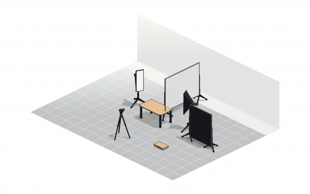
Flasche SpekularTisch 120 x 70, Kamera Stativ Standard, Striplight 30 x 120 und Diffusionsrahmen 200 x 200 +2 Schmuck ScrimTisch 120 x 70, Kamera Hohes Stativ, COB LED 300 W und Scrim 100 x 100 +3
Schmuck ScrimTisch 120 x 70, Kamera Hohes Stativ, COB LED 300 W und Scrim 100 x 100 +3 Food EditorialTisch 160 x 80, Kamera Hohes Stativ, Lantern 90 cm und Foamcore 100 x 150 +2
Food EditorialTisch 160 x 80, Kamera Hohes Stativ, Lantern 90 cm und Foamcore 100 x 150 +2 Flat Lay KleidungTisch 160 x 80, Kamera Hohes Stativ, Trittleiter Klein und Softbox Recta 90 x 120 +1
Flat Lay KleidungTisch 160 x 80, Kamera Hohes Stativ, Trittleiter Klein und Softbox Recta 90 x 120 +1Duo, Familie, Kinder und kleine Teams im Studio.
 Duo Weich WeitKamera Stativ Standard, Softbox Parabolique 150, LED-Panel 1 x 2 und Flag 90 x 120 +1
Duo Weich WeitKamera Stativ Standard, Softbox Parabolique 150, LED-Panel 1 x 2 und Flag 90 x 120 +1 Familie Weich DaylightKamera Stativ Standard, Softbox Parabolique 150, Panel-Reflektor 120 x 180 und Bank 120 cm
Familie Weich DaylightKamera Stativ Standard, Softbox Parabolique 150, Panel-Reflektor 120 x 180 und Bank 120 cm Trio CorporateKamera Hohes Stativ, Softbox Recta 90 x 120, Panel-Reflektor 120 x 180 und Bank 120 cm
Trio CorporateKamera Hohes Stativ, Softbox Recta 90 x 120, Panel-Reflektor 120 x 180 und Bank 120 cm Kids VerspieltPosing-Würfel 50 cm, Kamera Stativ Standard und Durchlichtschirm 105 cm
Kids VerspieltPosing-Würfel 50 cm, Kamera Stativ Standard und Durchlichtschirm 105 cmIntime, weiche oder luxuriöse Setups für Boudoir-Serien.
 Boudoir Fenster WeichSofa 180 cm, Kamera Stativ Standard, Diffusionsrahmen 200 x 200 und COB LED 600 W +2
Boudoir Fenster WeichSofa 180 cm, Kamera Stativ Standard, Diffusionsrahmen 200 x 200 und COB LED 600 W +2 Boudoir Sessel Low-KeySessel 90 cm, Kamera Stativ Standard, Silberschirm 150 cm und Negative Fill 120 x 200 +1
Boudoir Sessel Low-KeySessel 90 cm, Kamera Stativ Standard, Silberschirm 150 cm und Negative Fill 120 x 200 +1 Boudoir Lantern LoungeSofa 180 cm, Kamera Stativ Standard, Lantern 90 cm und Striplight 30 x 120 +2
Boudoir Lantern LoungeSofa 180 cm, Kamera Stativ Standard, Lantern 90 cm und Striplight 30 x 120 +2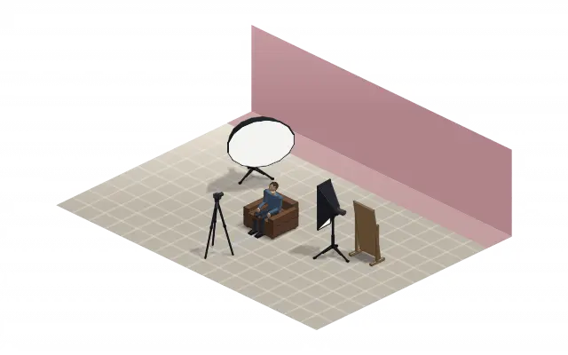
Boudoir ParabolischSessel 90 cm, Kamera Hohes Stativ, Softbox Parabolique 150 und Striplight 40 x 140 +1Sinnliche, Low-Key- oder grafische Setups ohne Bühnenchaos.
 Erotik Silhouette BurgunderKamera Hohes Stativ, Striplight 40 x 140 und Optischer Projektor 36°
Erotik Silhouette BurgunderKamera Hohes Stativ, Striplight 40 x 140 und Optischer Projektor 36° Erotik Projektor SchattenKamera Hohes Stativ, Optischer Projektor 19°, Fresnel 650 W und Negative Fill 120 x 200
Erotik Projektor SchattenKamera Hohes Stativ, Optischer Projektor 19°, Fresnel 650 W und Negative Fill 120 x 200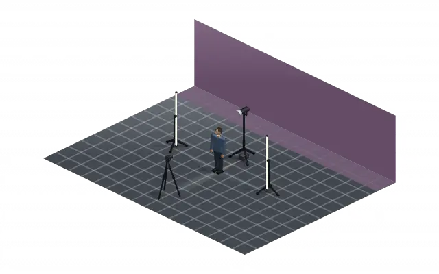
Erotik Neon TubesKamera Stativ Standard, LED-Tube 240 cm und COB LED 300 W Erotik Sofa KontrastSofa 180 cm, Kamera Hohes Stativ, Silberschirm 150 cm und Striplight 30 x 120 +1
Erotik Sofa KontrastSofa 180 cm, Kamera Hohes Stativ, Silberschirm 150 cm und Striplight 30 x 120 +1Skulpturales, High-Key- oder grafisches Licht für Akt.
 Kunstakt Skulptural HartKamera Hohes Stativ, Fresnel 650 W, Reflektor 80 cm und Flag 90 x 120
Kunstakt Skulptural HartKamera Hohes Stativ, Fresnel 650 W, Reflektor 80 cm und Flag 90 x 120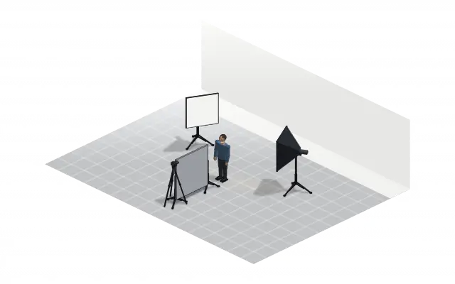
Kunstakt High Key KlassischKamera Stativ Standard, Softbox Recta 90 x 120 und Panel-Reflektor 120 x 180 Kunstakt Kontur GegenlichtKamera Stativ Standard, Striplight 40 x 140 und Negative Fill 120 x 200
Kunstakt Kontur GegenlichtKamera Stativ Standard, Striplight 40 x 140 und Negative Fill 120 x 200 Kunstakt Grafisch ProjektorKamera Hohes Stativ, Optischer Projektor 36°, V-Flat 100 x 200 und Foamcore 100 x 150
Kunstakt Grafisch ProjektorKamera Hohes Stativ, Optischer Projektor 36°, V-Flat 100 x 200 und Foamcore 100 x 150Interviews, Podcast, Greenscreen und hybride Sets.
 Interview LEDSessel 90 cm, Videokamera Videostativ, LED-Panel 1 x 2 und LED-Panel 1 x 1 +2
Interview LEDSessel 90 cm, Videokamera Videostativ, LED-Panel 1 x 2 und LED-Panel 1 x 1 +2 Podcast DeskSchreibtisch 140 x 70, Stuhl Standard, Videokamera Videostativ und LED-Panel 1 x 2 +4
Podcast DeskSchreibtisch 140 x 70, Stuhl Standard, Videokamera Videostativ und LED-Panel 1 x 2 +4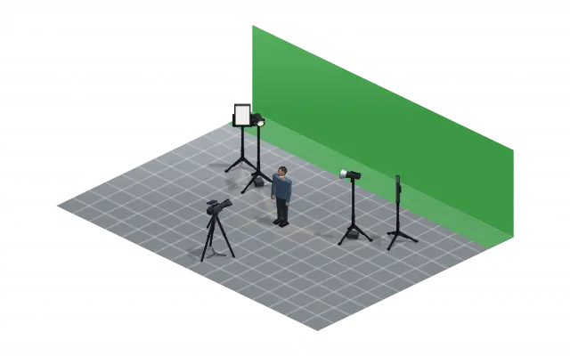
Greenscreen PresenterVideokamera Videostativ, COB LED 600 W, COB LED 300 W und LED-Panel 1 x 2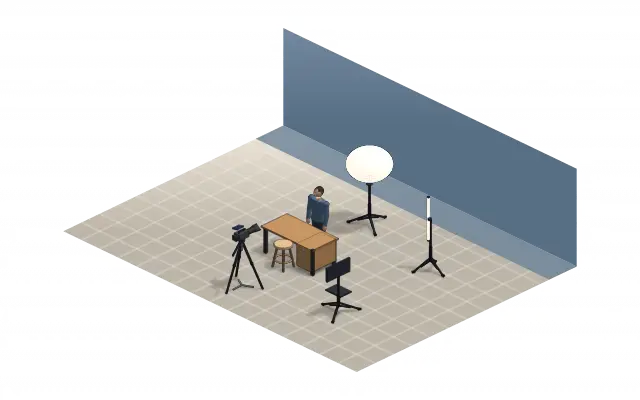
Masterclass WeichSchreibtisch 140 x 70, Hocker Hoch, Videokamera Videostativ und Lantern 90 cm +2 Mode BTS VideoVideokamera Videostativ, LED-Tube 240 cm, LED-Panel 1 x 2 und Wagen Rollwagen +1
Mode BTS VideoVideokamera Videostativ, LED-Tube 240 cm, LED-Panel 1 x 2 und Wagen Rollwagen +1Presets mit Projektion, Spiegel, Chroma und Schatten.
 Cinema GoboKamera Hohes Stativ, Optischer Projektor 19°, Fresnel 650 W und Flag 90 x 120 +1
Cinema GoboKamera Hohes Stativ, Optischer Projektor 19°, Fresnel 650 W und Flag 90 x 120 +1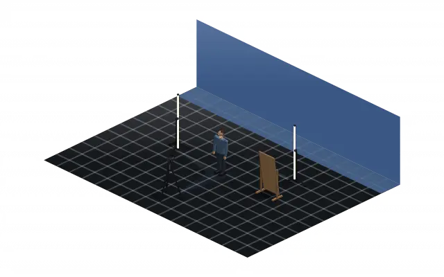
Spiegel TubesKamera Stativ Standard, Spiegel Stehend und LED-Tube 240 cm Chroma PopKamera Stativ Standard, Softbox Octa 120 und LED-Panel 1 x 2
Chroma PopKamera Stativ Standard, Softbox Octa 120 und LED-Panel 1 x 2 Schatten PlayKamera Hohes Stativ, Fresnel 200 W, Cutter 45 x 120 und V-Flat 120 x 240 +1
Schatten PlayKamera Hohes Stativ, Fresnel 200 W, Cutter 45 x 120 und V-Flat 120 x 240 +1Effiziente Grundlagen für Headshots, Editorials, Beauty und Businessportraits.
Beispiele: weiches 45°-Portrait, Clamshell-Beauty, Clean Corporate.
Strukturiertere Presets für Silhouetten, Kataloge, Flaschen, Duos, Familien oder kleine Teams.
Beispiele: parabolische Mode, Tabletop-Packshot, Family Soft Daylight.
Grafischere oder sensiblere Szenen mit Mobiliar, markanten Hintergründen, Projektion und Schatten.
Beispiele: Boudoir Parabolic, Hard Sculptural Nude, Shadow Play.
Kategorien
Große Quellen, weicher Bounce und präzise Kontrolle für saubere Haut- und Gesichtszeichnung.
Kategorien
Atmosphärischere Presets mit farbigen Hintergründen, Mobiliar, Negative Fill und stärkerer Separation.
Kategorien
Eine klare Basis für Talking-Head-Content mit Kamera, Stuhl, LED-Panels, Tubes und Set-Kontrolle.
Praktisch
Presets beschleunigen den Start, danach kannst du jedes Element verschieben, drehen, entfernen oder ergänzen.